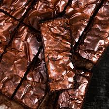

Receita de brownie

Descrição
Essa receita de brownie e muito simples e nao tem como dar errado!
Com ela teremos o brownie com uma casquinha crocante.
Ingredientes
- 2 ovos
- 125 g de acucar refiando
- 150 g de chocolate meio amargo
- 60 g de manteiga sem sal
- 10 g de cacau em po 100%
- 45 g de farinha de trigo
- Uma pitada de sal
Modo de preparo
- Derreta o chocolate com a manteiga.
- Bata os ovos com o acucar ate que fique com uma cor clara e fofa.
- Vamos juntar tudo agora e mexer bem para virar uma mistura homogenea.
- Coloque a mistura numa forma ja com papel manteiga.
- Coloque no forno a 200° graus por 20 minutos.
- Espere ate esfriar para consumir.
Home